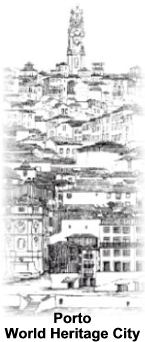
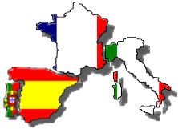

|

|
Welcome to the 2001
Southwestern
European Regional
Contest official site !

SWERC'2001 is integrated in the
ACM International Collegiate Programming Contest. It draws students from colleges and universities throughout
France, Italy, Portugal and Spain. The winner team will advance to the
ACM Programming Contest World Finals,
where it will compete with students selected in other regional contests, from all continents.
This year the contest will be held in the beautiful city of
Porto, under the
patronage of the Faculties of
Engineering and of Science at the
University of Porto, Portugal.
Important Dates: |
Early Registration: |
15/03/2001 to 01/11/2001 |
Registration: |
15/03/2001 to 08/11/2001 |
Hotel Reservation: |
n/a |
Data modification |
n/a |
Frequently Asked Questions:
What exactly is this contest?
See if you can participate in SWERC.
How to apply for the contest?
Read the detailed rules of the contest.
Know more about the city of Porto !
|